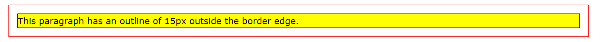

An outline is a line that is drawn around elements, OUTSIDE the borders, to make the element "stand out".
CSS has the following outline properties:
outline-style
outline-color
outline-width
outline-offset
outline-shorthand
outline-style
The outline-style property specifies the style of the outline, and can have one of the following values:
dotted - Defines a dotted outline
dashed - Defines a dashed outline
solid - Defines a solid outline
double - Defines a double outline
groove - Defines a 3D grooved outline
ridge - Defines a 3D ridged outline
inset - Defines a 3D inset outline
outset - Defines a 3D outset outline
none - Defines no outline
hidden - Defines a hidden outline
outline-color
The outline-color property is used to set the color of the outline.
The color can be set by:
name - specify a color name, like "red"
HEX - specify a hex value, like "#ff0000"
RGB - specify a RGB value, like "rgb(255,0,0)"
HSL - specify a HSL value, like "hsl(0, 100%, 50%)"
invert - performs a color inversion (which ensures that the outline is visible, regardless of color background)
outline-width
The outline-width property specifies the width of the outline, and can have one of the following values:
thin (typically 1px)
medium (typically 3px)
thick (typically 5px)
A specific size (in px, pt, cm, em, etc)
outline-offset
The outline-offset property adds space between an outline and the edge/border of an element. The space between an element and its outline is transparent.

outline-shorthand
The outline property is a shorthand property for setting the following individual outline properties:
outline-width
outline-style (required)
outline-color
The outline property is specified as one, two, or three values from the list above. The order of the values does not matter.